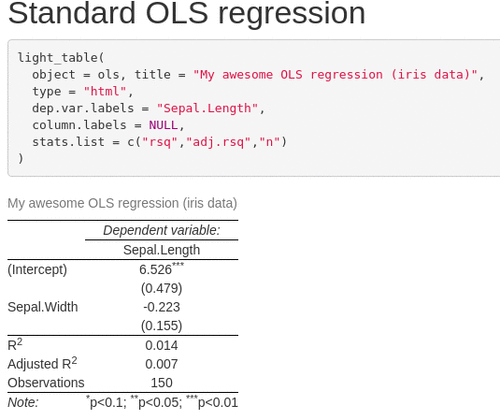
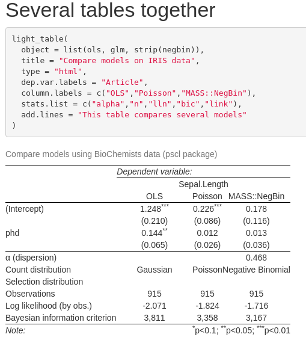
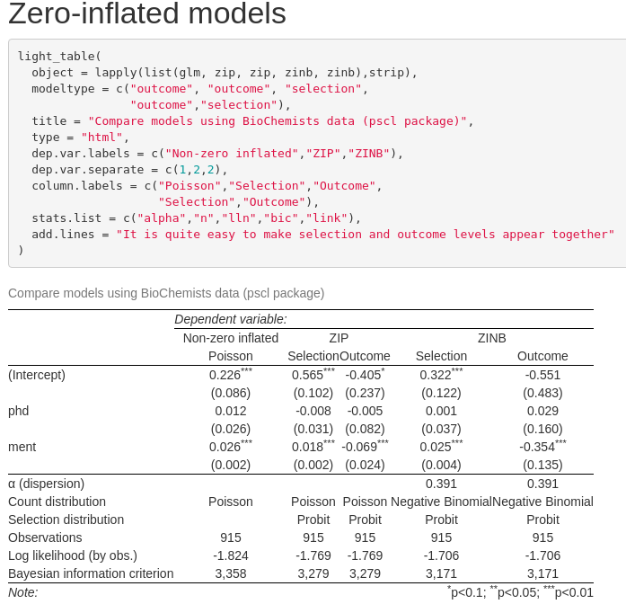

The goal of tablelight is to propose functions to generate regression tables using as little as possible computer resources, especially RAM. This package has been designed because stargazer requires a huge amount of RAM to produce tables with voluminous data.
The basic idea is to strip regression objects from unnecessary fat and use the lightened object to produce a regression table. The package contains two sets of functions:
-
stripfunction: a set of methods to remove heavier elements from a regression objects ; -
light_tablefunction: a function to produceLaTeXtables (HTMLtables in a future version).
The package is organized around a set of methods to extract information from regression objects. The list of regression objects accepted is, for the moment: lm, glm, negbin, oglmx, zeroinfl. Other types of regression objects will be added in the future.
To install this package, you can do
devtools::install_github("linogaliana/tablelight")If you want to use the 📦
library(tablelight)Here some examples of regression tables that can be produced with tablelight: 
Why do you need to strip fat from models ?
It is well known that regression objects are heavy in R (see this blog post that inspired this package). For instance, the following regression object is about 10 times heavier than the initial data:
df <- data.frame(
x = rnorm(1e6),
y = rnorm(1e6)
)
pryr::object_size(df)
#> 16 MB
regression <- lm(y ~ x, df)
pryr::object_size(regression)
#> 136 MBProducing a regression table with stargazer requires to call summary that asks more RAM:
library(profvis)
get_required_RAM <- function(profvis_object){
return(
max(profvis_object$x$message$prof$memalloc) - min(profvis_object$x$message$prof$memalloc)
)
}
get_required_RAM(profvis(summary(regression)))
#> [1] 30.65924To produce a regression table, that’s a deadly combo: you need to store a heavy regression object in memory and need more memory to summarize it in order to produce the table. With voluminous data, it is easy to make your RAM hit the limit available. The idea behind tablelight is that you just need heavy elements once (to produce standard error values and some fit statistics). Once they have been used, heavy elements can be thrown away.
Most of the pieces to lighten regression objects are described there. However, if you want to use stargazer later on, this will be impossible. You lose elements required to be able to run summary and hence produce the result table. A solution has been proposed by the strip package (here): stripping the object selectively. Unfortunately, this method is only available for lm objects and the weight loss is around 30%
# install.packages('strip')
pryr::object_size(strip::strip(regression, keep = "summary"))
#> 104 MBThe strip method used in tablelight 📦 is more drastic:
pryr::object_size(tablelight::strip(regression))
#> 7.34 kBOnly the elements needed to print a result table are kept. Since using stargazer is no longer possible on a lightened model, tablelight 📦 proposes a function (tablelight::light_table) to produce nice tables.
Some examples
General case
Let’s say you want to produce a regression table from two objects. For the moment, the freedom in customizing the table is limited but future enhancements will add more and more flexibility.
df <- data.frame(
x = rnorm(1e6),
y = rnorm(1e6)
)
df2 <- data.frame(
x = rnorm(1e6),
y = rnorm(1e6)
)
regression1 <- lm(y ~ x, df)
regression2 <- lm(y ~ x, df2)
get_required_RAM(profvis(
capture.output(stargazer::stargazer(regression1, regression2)))
)
#> [1] 0With tablelight, you will :
- Strip an object using
stripfunction ; - Use
light_tableto produce the output. Models should be provided as a list:
regression1 <- tablelight::strip(lm(y ~ x, df))
regression2 <- tablelight::strip(lm(y ~ x, df2))
get_required_RAM(profvis(
capture.output(light_table(list(regression1, regression2))))
)
#> [1] 0This is, approximatively, NaN times less memory needed.
The package produces table very similar in appearance with stargazer, for instance:

Specificity with zero inflated models
It is hard to put together selection and outcome equations in a zero-inflated model with stargazer. Normally, you need to chose between reporting selection or outcome related terms. Sometimes you want to report both together. Unless using a hack with stargazer (see here), this is not possible with stargazer.
This functionality has been integrated into light_table function. For instance, imagine you want to report both selection and outcome equations for a zero-inflated Poisson:
data("bioChemists", package = "pscl")
fm_zip <- strip(pscl::zeroinfl(art ~ . | ., data = bioChemists))
fm_zinb <- strip(pscl::zeroinfl(art ~ . | ., data = bioChemists, dist = "negbin"))In that case, you will use
light_table(list(fm_zip, fm_zip),
type = "html",
modeltype = c("selection","outcome"),
dep.var.labels = c("Selection","Outcome"),
stats.var.separate = 2L)stats.var.separate is not compulsory but it’s nicer to get multicolumned performance statistics rather than two times the same.
If you want to compare zero-inflated Poisson and zero-inflated negative binomial models, you can use the following template:
